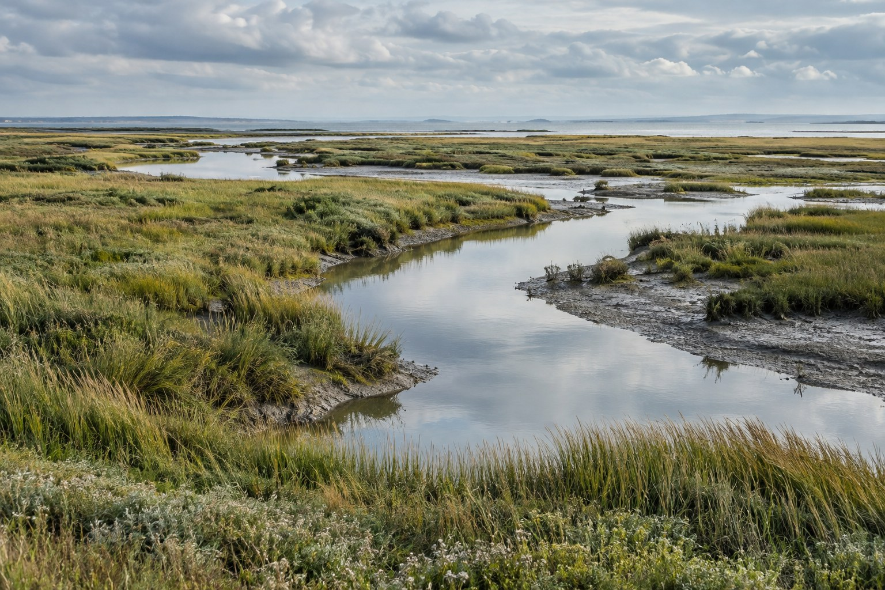

How a living dune holds its ground
What changes when sand is allowed to move?
Coastal restoration / North Atlantic
A working journal for restoring salt marshes, dunes, and public shores with the people who live beside them.
Browse the journal
Restoration starts with small changes that give water, sand, and wildlife more room.

A volunteer crew reopens old channels so brackish water can reach the low meadow again.
What changes when sand is allowed to move?
A survey of the plants that slow a bay down.
A conversation about access, repair, and shared ground.